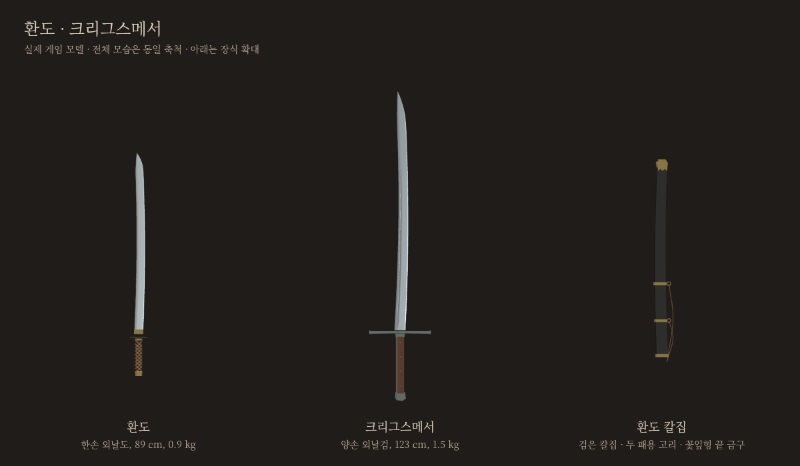
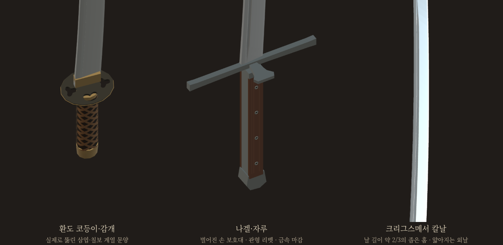
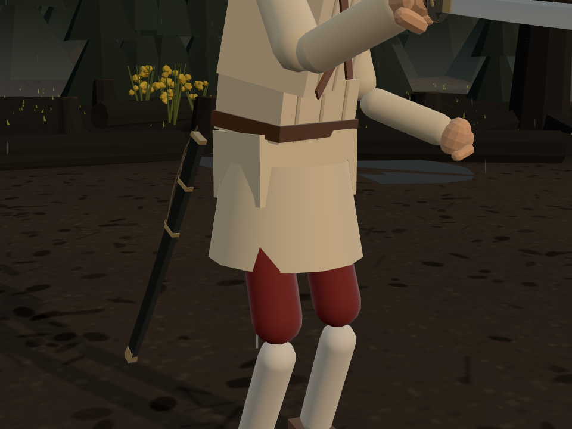
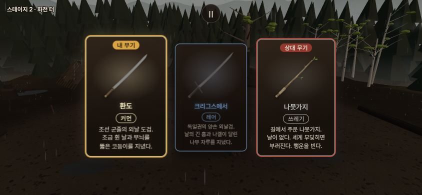

환도 · 크리그스메서
조선 군용 환도와 독일 크리그스메서의 실물 형태를 반영했습니다.

실제 게임 모델을 같은 축척으로 촬영한 관찰 화면입니다.환도 · 동방 커먼
칼날72cm · 전체 약89cm · 0.90kg. 부산박물관 군용 환도의 약한 휨, 갈색 감개와 투각 코등이를 반영했습니다. 검은 칼집에는 두 패용 고리와 꽃잎형 끝 금구가 있습니다.
환도로 대련크리그스메서 · 독일 레어
칼날95cm · 전체123cm · 1.50kg. Knecht Mark II를 바탕으로 칼날을10cm 늘렸습니다. 긴 날 홈, 나무 자루의 관형 리벳, 한쪽으로 벌어진 나겔을 볼 수 있습니다.
크리그스메서로 대련롱소드와 비교포크의 별도 검토판입니다. 상대는 나뭇가지를 든 브론이며, 여정 진행은 저장하지 않습니다.

구멍과 날 홈은 실제 형상으로 만들었습니다.칼집과 무기 카드


실물 참고와 게임 각색
부산박물관 군용 환도 구입10194는 날47cm이며 게임에서는72cm로 늘렸습니다. 곡률과 일부 세부 치수는 사진을 참고한 해석이며,0.90kg는 게임 추정값입니다.
Albion Knecht Mark II는 역사적 유물을 참고한 현대 제작검입니다. 공개 사양은 전체113cm·날85cm·1.38kg입니다.
이전 시안 보기